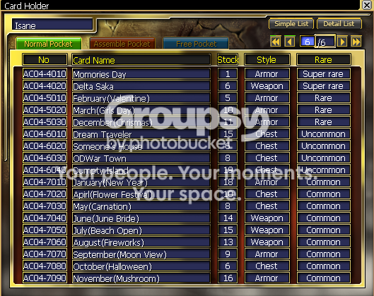
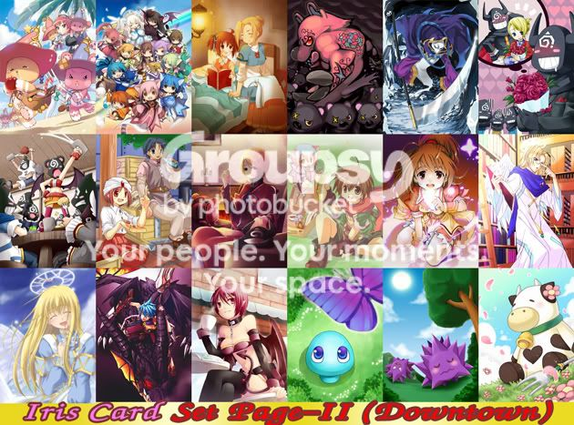
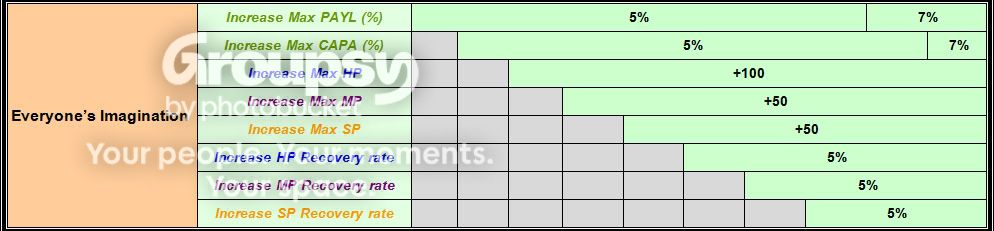

ขอบคุณสำหรับคำตอบครับ
แต่กว่าจะเจาะครบ5รู หาการ์ดรวมการ์ดได้นี่คงเสียเงินมากมายมหาศาลนะครับเนี่ย(ถ้าราคาของกันแตกมันแพง)
แต่กว่าจะเจาะครบ5รู หาการ์ดรวมการ์ดได้นี่คงเสียเงินมากมายมหาศาลนะครับเนี่ย(ถ้าราคาของกันแตกมันแพง)
http://eco.froztic.in.th/archive/ecofanclub/
http://eco.froztic.in.th/archive/ecofanclub/viewtopic.php?f=36&t=74361


Lugia เขียน:ภาษาถ้วยมากกกกก
ผมขอความร่วมมือจากเืพื่อนๆอย่างนึงครับ ถ้าเป็นไปได้
ช่วย จดรหัสการ์ดพร้อมชื่อการ์ด มาแปะไว้ให้ที แล้วผมจะำเอาไปทำ AV table จะได้เข้าใจง่ายๆหน่อย
รหัสการ์ดเขียนอยู่ในคำอธิบายการ์ดเป็น format แบบ AC 0x-xxxx
ขอบคุณล่วงหน้าครับ ผมกำลังทรัพไม่พอทำทั้งหมดน่ะ









Lugia เขียน:ยัดการ์ดเดียวกันลงไปในหลายๆช่องได้ครับ
gamemaster21 เขียน:Lugia เขียน:ยัดการ์ดเดียวกันลงไปในหลายๆช่องได้ครับ
ยัดการ์ดใบเดียวลงไปหลายๆ ช่องระบบจำนับรวมเฉพาะค่าAV ใช่ป่าวครับ
Lugia เขียน:gamemaster21 เขียน:Lugia เขียน:ยัดการ์ดเดียวกันลงไปในหลายๆช่องได้ครับ
ยัดการ์ดใบเดียวลงไปหลายๆ ช่องระบบจำนับรวมเฉพาะค่าAV ใช่ป่าวครับ
ไม่ว่าเราจะยัดการ์ดนั้นไว้ที่ส่วนไหน ถ้ามี AV เดียวกัน ค่าเวกเตอร์ของ AV นั้นจะนับรวมกันหมดครับผม